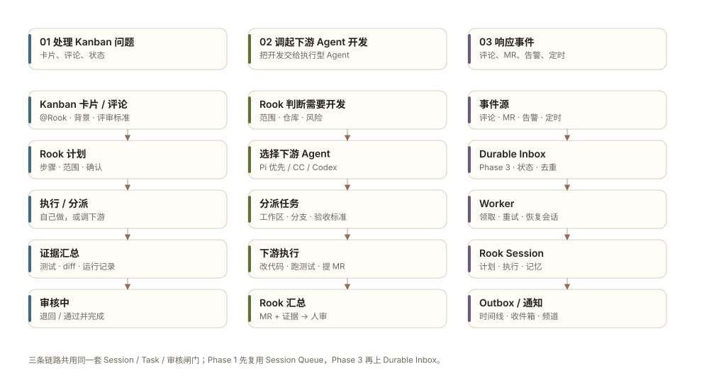
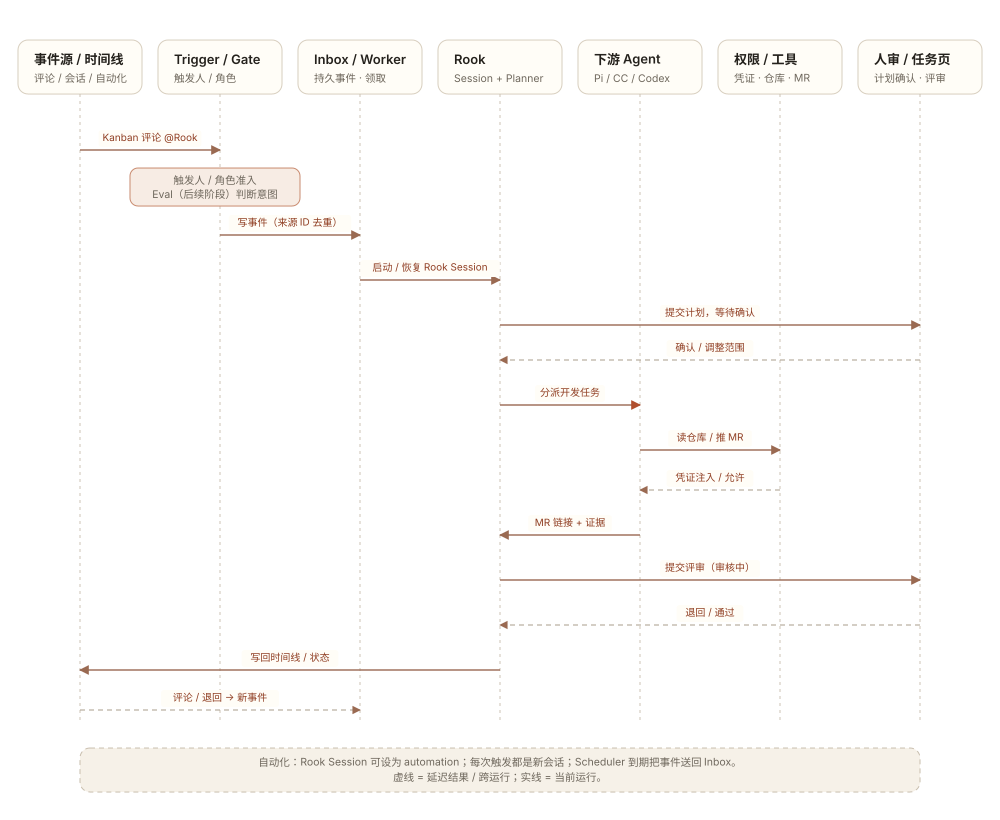

Rook 是一个住在项目管理工作台里的 Agent。它出现在处理人、任务时间线和运行记录里，可以接任务、做计划、调下游 Agent 开发，再把结果送到审核闸门。它和普通聊天 Agent 的差别不在推理循环，而在循环外面的系统：什么时候被唤醒、两次运行之间留下什么、结果怎样到达人和看板。
Rook 的设计已经给出了一个很好的起点：会话是通用执行单元，任务页是评审现场，Kanban 列表达承诺，自动化是可重复的会话。真正要补的是常驻化所需的持久层——事件、定时器、记忆、权限和投递。
现在更可行的原因有两个。模型判断更好，更能读懂意图，也更知道何时该回来确认；成本更低，长周期任务受益尤其明显。Anthropic 文章给出的数字是：Opus 5.5 在长周期编程任务上，每个已解决任务的成本比 Opus 5 低 78%；典型工作负载低 40%。
先把 Rook 还原成一个事件循环
“常驻”不是进程一直跑，而是随时可以被事件唤醒。一次运行通常是一次短事务：接住事件、打开或恢复会话、计划、执行或分派、写回状态，然后休眠。用户感知到的“一直在”，来自循环没有终点。
设计的支点，是把运行当成无状态的计算单元，把状态放到外部存储。由此得到三个不变量：事件不丢、状态可恢复、行为可控。五个构件本质上是在分别维护这三个不变量。
一次性会话
- 由用户消息触发
- 状态只活在这次会话里
- 逐步流式输出
- 失败由用户重试
- 成本按请求发生
常驻 Rook
- 由评论、会话、自动化、手动运行触发
- Task 与 Session 绑定，状态可恢复
- 输出结果、证据和少量摘要
- 失败由 Worker 重试、会话恢复
- 空闲近乎为零，唤醒时付费
把系统按职责分层，会比按功能罗列更容易落地：
01 入口层：事件收件箱
Rook 的触发面比聊天 Agent 宽：Kanban 卡片和评论里的 @Rook、新会话、自动化触发、手动“立即运行”，以后还会包括 MR 评论、告警和外部 webhook。不要让这些来源直接调用 Agent。直接调用有两个问题：并发事件会启动互相竞争的运行；进程崩溃会丢事件。
更稳的做法是先把事件落成一行持久记录，再让 Worker 从记录里取。三件套是：一张事件表、一个写入端点、一个后台 Worker。每个事件带状态，按来源提供的标识去重。起步阶段可以一个任务或一个用户一个收件箱；需要更高并行时再拆。
运行中又来了事件，有三种策略：推迟到下一轮、合并进当前运行、打断并重启。没有一种永远正确；关键是显式选择，并把它写进状态机，而不是留给 Worker 的临场判断。
Rook 的 Gate 不只是触发词。在写入收件箱之前，还要看触发人是谁、在不在允许的角色或默认 RD 组里、有没有这个工作区的权限。Phase 1 只响应显式的 @Rook，所以不需要模型判断意图；Eval 可以留到后续阶段。
至少一次投递意味着幂等。来源 ID 去重只是第一层；工具调用也要幂等，或者把“已执行”写进事件状态。否则 Worker 重试会重复发评论、重复建 MR、重复改任务状态。
入口层要定下的四件事
02 时间层：定时器与自动化
Rook 的自动化有两种触发语义：时间触发（每天 09:30、每小时整点）和事件触发。每次自动化运行本身也是一次会话，产生结果和用量；任务页上的“设为自动化”，就是把一次会话变成可重复的调度。
把定时器放进收件箱，会污染“现在可做”的语义。更清晰的做法是独立一张表。定时器到期不直接启动运行，而是由 Scheduler 转成收件箱事件。这样入口只有一个，重试、去重、并发控制都复用同一套逻辑。
Scheduler 的每一轮只做三件事：找出到期项；按类型更新（一次性 follow-up 标记完成，周期 schedule 推到下一次）；写入收件箱事件并唤醒 Worker。它可以自己写，也可以交给持久化执行引擎。
二次解读：定时器最容易出问题的地方，不是“到点没触发”，而是“重复触发”和“补触发”。进程停了一段时间，恢复后要不要补跑错过的周期？补跑几次？时区、夏令时、时钟漂移怎么处理？这些要在表结构里写清楚，而不是留给 Scheduler 的实现细节。
03 状态层：记忆
Rook 的记忆不是聊天记录的别名，而是跨运行的工作状态。它至少要让下一次运行知道：这个任务的背景和评审标准是什么、上次做到哪、已经告诉过谁什么、有哪些证据。一条实用原则是：只存无法重新取回的东西。能从任务、MR、仓库或工单里查到的，存指针，不存副本。
一个可用的目录布局：
rook-state/
├── policy/
│ └── instructions.md # 每次运行加载
├── tasks/
│ └── <task-id>/
│ ├── index.md # 背景、评审标准、计划索引
│ ├── progress.md # 已完成 / 剩余
│ └── evidence.md # 测试、diff、运行记录
└── delivered.md # 已回复 / 已通知的内容可选的整理过程会回看历史运行，合并重复、淘汰过期条目，发现只有跨多次运行才浮现的模式。它本身也应该是一次受权限和成本约束的运行，而不是隐形的后台魔法。
上下文是固定成本
每次运行开始，都要加载系统提示、工具定义和常驻记忆。这份开销每轮重复，所以要精简，并用 prompt caching 降低成本。新会话只包含这份开销加上触发事件；续接的会话还会恢复之前的消息和工具调用。会话太长时，可以压缩旧消息或开新会话，但两种办法都会丢细节，因此重要信息要在工作过程中就写进记忆。
二次解读：记忆是产品界面，不只是存储。用户应该能看见、纠正、删除记忆；否则一个错误会跨运行放大。工程上至少要有版本、来源、过期时间和删除路径，还要明确哪些内容永远不写入记忆。
04 安全层：权限
Rook 是 Kanban 里的一等 assignee，这意味着它会以自己的 Agent 身份出现在处理人、时间线和运行记录里。它持有工作区授予的访问权限，又要在无人逐步指挥下工作，所以权限是五个构件里风险最高的。每个工具调用，Rook 都有三种选择：执行、阻止、等待批准。
延迟调用值得单独设计。它不是超时重试，而是把“等人”变成一个一等状态：运行结束、会话快照保存、请求送达用户、回答进入收件箱、新运行恢复会话。等待期间 Worker 不被占用。实现上要保证快照可恢复，并且恢复后不会重复执行已经产生副作用的步骤。
二次解读：权限设计要同时防两类失败。一类是过度自治：Rook 做了不该做的。另一类是审批疲劳：该问的不问，或者用户闭眼点同意。前者靠最小权限、凭证隔离和下游 Agent 的边界；后者靠分级——低风险自动执行，中风险批量确认，高风险单次确认。
05 出口层：发件箱
Rook 在后台工作，用户不需要看每一步；他们需要的是结果、影响和下一步。一次运行有三种结束方式：发一条消息；判断没有需要发送的内容；发起延迟调用，请求计划确认、输入或评审。
Rook 的输出面不止一个：任务时间线的活动、评论回复、关联 MR、证据块、自动化运行记录、收件箱通知，必要时还有频道消息。多数场景一个简单的 send 工具就够了；只有当需要控制消息节奏或从错误中恢复时，才需要正式的发件箱。它和收件箱一样是一张表；Dispatcher 读取待发消息，决定发什么，再投递给用户。
消息量是产品参数，不是实现细节。发太多是噪音，发太少会漏掉重要事项。文章的建议是用 eval 找平衡，并且从安静开始，让 Agent 逐步赢得用户的注意力。
二次解读：出口至少要做三件事：去重，同一事件重试不能重复通知；分级，评审结果、阻塞问题和普通进度走不同通道；留痕，发送记录本身也是记忆的一部分，下一次运行要能知道“已经说过什么”。
Rook 的运行时结构
把五个构件落到 Rook 上，会得到一条完整的链路：Kanban 事件、会话和自动化从入口进来；Rook 在 Task 与 Session 的绑定里恢复上下文；Planner 做计划，必要时把开发分派给下游 Agent；结果经过评审闸门，回到任务时间线和通知。

待确认：触发词用 @Rook 还是 @superagent、执行身份是否沿用人触发时的工作区 SSO、Task ↔ Session 绑定是否命名为“Task 会话”，这些都还在设计草案的待决定项里。实现前以最终词汇表为准。
Rook 的三类工作
Rook 的入口不止一个，但底下的执行单元是同一套：Session、Task 和审核闸门。区别只在入口，以及是否把开发分派给下游 Agent。


处理 Kanban 问题
卡片或评论里的 @Rook 是最直接的入口。Rook 读取任务背景、评审标准和历史评论，给出计划和范围；用户确认后，Rook 要么自己做，要么把开发分派出去。完成后，它把测试结果、diff 大小、staging 观察、步骤数、token 用量和耗时整理成证据，送进“审核中”。人可以选择退回或通过并完成。
调起下游 Agent 开发
当任务需要改代码时，Rook 不必自己变成执行型 Agent。它可以选择下游 Agent（Pi、Claude Code、Codex 等），把工作区、分支、验收标准和证据要求一起分派下去。下游执行完，Rook 汇总 MR 链接和证据，再提交人审。这里的关键是边界：下游 Agent 只拿到完成任务所需的仓库和工具，不继承 Rook 的全部权限。
响应事件
评论、MR 评论、告警和定时任务都可以唤醒 Rook。事件先进入 Durable Inbox，再由 Worker 领取；如果已经有 Task 会话，就恢复上下文，否则新建。Rook 的结果通过时间线、评论、收件箱或频道送达。一次会话还可以“设为自动化”，变成以后重复运行的调度。
会话是入口，Kanban 是承诺，任务页是评审，自动化是重复。
Rook 工作台设计 v0.4
这句话已经把常驻化的骨架说清楚了：入口、承诺、评审和重复，分别对应上面的入口层、状态层、出口层和时间层。
一次 @Rook 运行
以 Kanban 评论触发为例。用户在任务评论里 @Rook，要求修复一个问题；这条评论进入 Trigger + Gate，通过触发人和工作区权限检查后写入 Durable Inbox。Worker 领取事件，绑定对应的 Task 会话，启动一次运行。


- Rook 加载指令、任务背景、计划与进度、已回复内容，避免重复劳动。
- Rook 给出计划：要做哪些步骤、范围是什么、需要哪些权限。用户确认或调整；这是一次延迟调用，会话在等待期间保存。
- 需要开发时，Rook 把任务分派给下游 Agent。下游在限定的工作区里改代码、跑测试、提 MR；凭证由权限代理注入，不落到 Agent 里。
- 下游返回 MR 链接和证据：单测结果、diff 大小、staging 观察、步骤数、token 用量、耗时。
- Rook 汇总后提交评审，任务进入“审核中”。人可以退回，也可以通过并完成；退回或评论都会变成新的收件箱事件。
- Rook 写回时间线和任务状态。如果这次会话值得重复，用户或 Rook 可以把它设为自动化，交给 Scheduler 在未来再次唤醒。
这条链路里，五个构件各司其职：收件箱接住评论，定时器接住“以后再看”，记忆接住“上次做到哪”，权限接住“能不能改这个仓库”，发件箱接住“让人知道结果”。任何一层缺失，Rook 都会退化成一次性脚本。
落地时的取舍
复用 Task 还是另造授权模型
如果 Task、claim 和 Agent 凭证已经能表达“谁授权 Rook 做什么”，就不要再造一套 Ticket 或 Mandate。两个名字指同一件事，后面一定会对不齐。
Rook 自己做 vs 调下游 Agent
规划、汇总和评审留在 Rook；重执行交给下游 Agent。边界要写清楚：工作区、分支、验收标准、证据格式和返回路径。
至少一次 vs 恰好一次
大多数队列表只能做到至少一次。与其追求恰好一次，不如把运行和工具调用做成幂等，再用去重表兜底。
并发 vs 顺序
同一任务同一时间只应该有一个活跃的 Rook 运行。用 Task claim 或租约避免两个运行同时改同一个任务。
记忆丰富 vs 上下文成本
索引常驻，详情按需。记忆越全，每轮固定开销越大；用 prompt caching 和分层加载控制成本。
自治 vs 审批疲劳
计划确认和评审闸门是两次人机接触点。不是所有动作都值得问；按风险分级，把注意力留给不可逆的决定。
消息量 vs 信任
先用 eval 找到“不漏重要事项”的下限，再从安静开始。频繁打扰会消耗信任，而信任很难恢复。
自建 vs 执行引擎
先自建最小闭环，把事件、状态、重试跑通；当定时器和恢复逻辑开始变复杂，再评估持久化执行引擎。
落地顺序
- 先建立 Task ↔ Session 绑定，让 Rook 成为一等 assignee；没有这个绑定，后面的常驻化都是空中楼阁。
- 入口先做显式
@Rook和 Gate（触发人、角色、工作区权限），再补 Durable Inbox 和 Worker。 - 自动化与 Scheduler 独立存储；每次运行都产生会话、结果和用量，到期只负责转成事件。
- 记忆先做指令、任务上下文、计划进度和证据；索引常驻，详情按需，重要信息随做随写。
- 凭证放进代理；计划确认和评审闸门做成可暂停、可恢复的延迟调用；下游 Agent 单独限定权限。
- 出口先写时间线活动、评论回复和
run_finished，再补收件箱通知和频道消息；同一事件不重复投递。 - 加观测：事件积压、运行时长、下游 Agent 失败率、评审等待时长、重复投递。
- 用 eval 调消息量和主动性，从安静开始；Eval 的意图判断可以留到后续阶段。